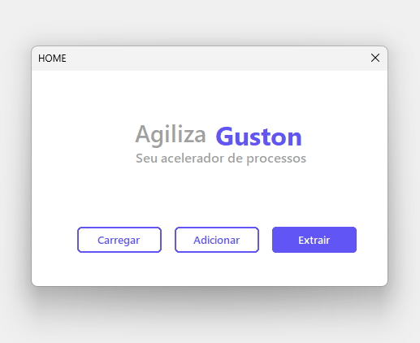
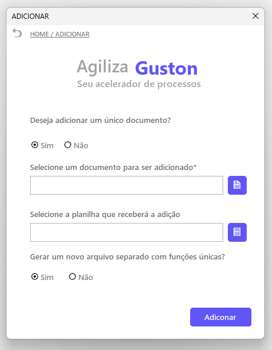
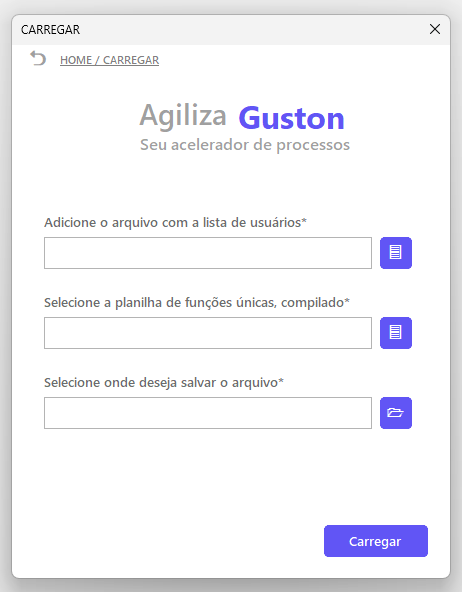

Brunão é lindo
Agiliza Guston é uma ferramenta desenvolvida em Excel com automações em VBA, Visual Basic for Applications, projetada para otimizar e centralizar o processo de gestão de usuários e atribuição de funções empresariais no S/4HANA Cloud ERP.
A solução integra, em um único fluxo, atividades que normalmente são executadas de forma manual e fragmentada, como:
- Coleta de funções, roles;
- Consolidação e eliminação de funções duplicadas;
- Atribuição de funções a um grupo de usuários.
Como resultado, a aplicação gera três saídas principais:
- Arquivo completo: contendo a extração integral das funções, roles, identificadas, incluindo dados brutos e consolidados;
- Arquivo parcial: contendo apenas as funções consolidadas, sem duplicidades;
- Arquivo de migração: estruturado para suporte à atribuição em massa de funções a usuários dentro do sistema.
Em termos de processamento, a ferramenta permite a leitura de documentos individuais ou diretórios locais contendo arquivos das melhores práticas da SAP (Best Practices), no formato padrão, .docx, conforme disponibilizados no SAP for Me e Process Navigator, tanto em português quanto em inglês.
Com base nestes documentos, a aplicação identifica automaticamente a seção relevante (índice 2.2), extraindo a tabela de funções e realizando a transcrição estruturada dos dados para planilhas no Excel, conforme descrito na imagem 1:
Imagem 1 - Fluxo de processamento

Após habilitar as macros da planilha, removendo o bloqueio automático gerado no compartilhamento do arquivo, clique no botão “Abrir App” para acessar o formulário inicial da aplicação (Home).
Na tela inicial, você encontrará três opções principais, conforme ilustrado na imagem 2:
- Extrair: responsável por processar documentos de um diretório local, extrair as funções empresariais, roles, e consolidar os dados em planilha, gerando os arquivos completo e parcial, imagem 1;
- Adicionar: permite incluir novos documentos a uma base já processada, complementando os dados existentes sem necessidade de reiniciar o processo;
- Carregar: a partir de um arquivo previamente processado e de uma planilha de usuários da empresa, exportada diretamente do SAP, gera o arquivo de migração utilizado para atribuição em massa de funções no sistema.
Imagem 2 - Tela de início

Extrair
Nesta função, você deve informar o caminho do diretório local que contém os documentos para extração, BP's. Para isso, utilize o botão ao lado da caixa de texto para selecionar a pasta desejada.
Em seguida, informe o diretório onde os arquivos gerados serão salvos, utilizando o mesmo processo de seleção.
Ao final do formulário, há uma opção que, por padrão, vem habilitada com o valor "Sim/True". Essa configuração é responsável por gerar, além do arquivo completo, um arquivo adicional, parcial, contendo apenas as funções consolidadas (sem duplicidades), conforme ilustrado na imagem 1.
Imagem 3 - Tela de extração
Nesta função, você pode complementar um processamento já existente com novos documentos.
No primeiro campo do formulário, você deve indicar se deseja adicionar um único documento ou múltiplos arquivos:
- Para um único documento, selecione o arquivo referente à Best Practice da SAP no formato .docx;
- Para múltiplos documentos, selecione um diretório local contendo os arquivos, utilizando o mesmo processo da função Extrair.
No segundo campo, informe o arquivo previamente processado ao qual deseja adicionar os novos dados, selecionando-o através do botão ao lado.
Ao final do formulário, há uma opção que, por padrão, vem habilitada "Sim/True". Essa configuração define se será gerado um novo arquivo consolidade, parcial, com as informações atualizadas.
Imagem 4 - Tela de adição

Nesta função, você realiza a preparação do arquivo para atribuição em massa de funções a usuários. Para isso, você precisará de 2 arquivos em mãos:
- Tabela de usuários na empresa: disponível no ambiente, contendo chaves-únicas do usuário, como ID do usuário e o Global;
- Aquivo de funções cosolidadas, parcial: Este é o arquivo gerado separadamente na função extrair.
No primeiro campo, informe o caminho para a planilha de usuários na empresa, exportada diretamente do ambiente SAP.
No segundo campo, selecione o arquivo previamente processado contendo as funções consolidadas, parcial.
Por fim, no terceiro campo, indique o diretório onde deseja salvar o arquivo de migração que será gerado.
Imagem 5 - Tela de carregamento

Para baixar a aplicação, basta clicar no botão verde abaixo, identificado como “Baixar Ferramenta”.
O arquivo será transferido automaticamente para o seu computador. Após o download, siga as instruções disponíveis na seção Sobre para correta utilização da ferramenta
Desenvolvido por: Claudio Gastão Júnior
Objetivo: A solução foi construída como iniciativa prática de aplicação em cenários reais, com ênfase em eficiência, padronização e ganho operacional.